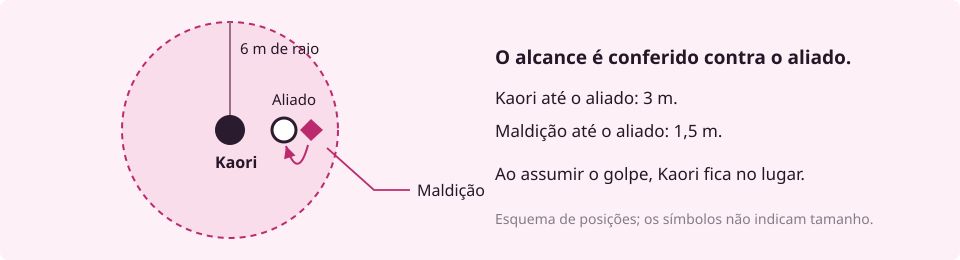

A ala oeste da escola está desativada desde o ano passado. Mesmo assim, alguém deixou uma mochila diante da última sala.
Kaori para no começo do corredor. Ainda é tarde, mas a luz das janelas mal alcança a porta. Uma coisa do tamanho de um cachorro grande está encolhida junto ao batente. Ela se levanta apoiada em membros compridos demais. Kaori procura uma cabeça e não encontra.
A missão era verificar a sala. O relatório não dizia nada sobre a mochila.
Ela encosta uma palma na outra. Atrás dela, um colega pergunta se devem chamar reforços. A criatura arranha a madeira.
Você avança, procura outro acesso ou tenta descobrir quem deixou a mochila?
Em Projeto - M, você cria um personagem e decide como ele enfrenta situações como essa. Sua técnica, seus vínculos e aquilo que você aceita arriscar passam a fazer parte da história. Os demais jogadores trazem seus próprios personagens; juntos, vocês dão forma à equipe que vai entrar naquele corredor.
Uma pessoa assume o papel de mestre: apresenta os lugares, interpreta quem vocês encontram e conduz as ameaças. Você diz o que seu personagem tenta fazer. Quando o resultado é incerto e a falha importa, as regras e os dados ajudam a descobrir o que acontece.
O perigo pode continuar depois de uma vitória. A sala ainda precisa ser aberta. Alguém precisa reconhecer a mochila. E Kaori terá de explicar por que entrou sem esperar os reforços, se essa for sua escolha.
Maldições nascem das emoções negativas humanas. O medo, a vergonha e o rancor podem deixar marcas muito além de quem os sentiu. No universo de Jujutsu Kaisen, essas forças ameaçam pessoas que muitas vezes nem compreendem o perigo. Feiticeiros enfrentam essas ameaças por meio do jujutsu, a prática de lidar com a energia amaldiçoada e suas manifestações.
O trabalho pode levar uma equipe a uma escola, a um prédio interditado ou à casa de alguém que parou de responder às mensagens. A missão começa com informações incompletas. Descobrir o que aconteceu, alcançar quem ficou para trás e escolher quando lutar são decisões que o grupo toma durante o jogo.
Uma técnica pode partir de uma ideia muito específica. Kaori torna mais pesado o que prende entre as mãos. Essa ideia diz algo sobre como ela luta: precisa chegar perto, tocar e sustentar o confronto. Outra pessoa poderia imaginar uma técnica ligada a sombras, palavras ou objetos cotidianos, e explorar suas possibilidades ao longo da campanha.
O sistema chama de Fundamento a base que descreve a técnica e reúne as escolhas usadas para construir suas aplicações. Cada feitiço é uma aplicação com efeito e regras de uso definidos. A criação orienta você a transformar a ideia em algo que toda a mesa consiga entender e arbitrar.
Existem também outras rotas de poder. Você pode jogar com alguém sem técnica inata, um receptáculo ou um corpo amaldiçoado. A Origem escolhida informa quais regras usar. O livro explica cada rota no momento de montá-la; ninguém precisa conhecer todas para começar.
Uma ordem pode reunir desconhecidos na primeira missão. O que acontece depois depende deles. Talvez um colega tenha assumido um golpe por você. Talvez a família de outro esconda a informação de que precisam. A volta de uma missão dá espaço para cobranças, treinos, alianças e conversas que mudam a próxima saída.
Kaori cresceu ouvindo que seu clã havia perdido prestígio. A avó lhe ensinou a reconhecer ervas; a família esperava que ela recuperasse o valor do sobrenome. Em campo, Kaori se preocupa com algo mais imediato: trazer todos de volta. Essa diferença entre expectativa e vontade já oferece uma história para jogar.
A Guilda e a sua mesa
Aqui, Guilda é a comunidade de jogadores organizada em um servidor. O projeto foi feito para que o mesmo personagem participe de mesas de diferentes mestres, mantendo sua ficha e sua história. O termo não nomeia uma instituição obrigatória do mundo ficcional.
Antes de começar, combinem época e lugar da campanha, relação entre os personagens e limites para os temas das cenas. A escola deste exemplo é uma possibilidade de começo.
Você precisa de uma ficha, um meio de anotar mudanças e dados físicos ou um rolador digital. A letra d indica um dado; o número depois dela indica suas faces. d20 vai de 1 a 20. 3d8 significa rolar três dados de oito faces e somar os resultados.
A ficha reúne as características e habilidades do personagem. Ela também registra recursos que mudam durante a missão, como Vida, reduzida quando você sofre dano, e Pontos de Energia (PE), gastos nas habilidades que cobram esse recurso.
Mestre: “Há uma grade travada no acesso lateral. Vocês escutam passos se aproximando.”
Jogadora: “Kaori tenta abrir a grade à força para o grupo passar.”
A tentativa tem dificuldade e o tempo importa. O mestre pede um teste de Atletismo, perícia usada em tarefas de esforço físico, e estabelece Classe de Dificuldade (CD) 14 para este caso. A CD é o total que o teste precisa alcançar.
Kaori tem Força 3 e é treinada em Atletismo. Por esse treino, soma sua maestria 1, o bônus de treinamento do nível dela. Seu teste é d20 + 4.
Igualou ou superou a CD: conseguiu. Kaori força a grade a tempo. O grupo decide quem passa primeiro e o mestre descreve o que vê do outro lado. Se a rolagem falhar, a consequência depende da situação: perder tempo, fazer barulho ou descobrir um impedimento que exija outra abordagem.
Uma regra pode dar vantagem: role dois d20, escolha o maior e some o bônus. Com desvantagem, escolha o menor. Se os dados forem 7 e 16, o teste com vantagem e bônus +4 dá 20; com desvantagem, dá 11.
Não é preciso rolar para toda fala ou gesto. Quando a tarefa pode acontecer sem dificuldade relevante, o mestre descreve o resultado e a conversa segue. Uma cena acompanha uma situação; ela termina quando o grupo a resolve, abandona ou passa a lidar com outra. A sessão pode conter várias cenas.
Em combate
Um ataque compara seu total com a Defesa do alvo. Os turnos organizam a ordem e os recursos de cada participante. A próxima cena mostra essa resolução com os números já preenchidos.
Descendente · Bastião · Trilha Muro · Nível 2
Kaori chega à ala oeste com 23 de Vida e 8 PE. Seu objetivo é abrir caminho sem deixar um colega ferido para trás. Abaixo está o recorte de ficha necessário para acompanhar este combate. O restante do repertório não faz parte desta amostra.
| Na ficha | O que você usa nesta cena |
|---|---|
| Iniciativa | d20 + 2, para saber quando Kaori age. |
| Ataque de conjuração | d20 + 4, para tentar acertar Peso nas Mãos. |
| Força 3 e maestria 1 | São os dois valores que formam o +4 do ataque. Força é o atributo escolhido para a técnica de Kaori. |
| Ação de Movimento | Permite percorrer até 9 m no turno. Kaori pode dividir essa distância antes e depois de agir. |
| Ação Padrão | Será usada para conjurar o feitiço. |
| Ação Bônus | Pode ativar Olhos Em Mim, explicado na amostra de proteção. |
| Reação | Responde a um gatilho e se recupera no começo do turno de Kaori. Não será gasta no ramo principal. |
Ação Padrão · 3 PE · um alvo a até 1,5 m
Kaori encosta as palmas uma na outra e toca o alvo com as duas mãos. Role d20 + 4 contra a Defesa dele. Se acertar, causa 3d8 de dano de Concussão e deixa o alvo Derrubado por 1 rodada.
O gesto de unir as palmas é o Selo, a exigência da técnica para conjurar. Kaori precisa ter as mãos disponíveis. O custo de 3 PE é pago ao conjurar, mesmo que o ataque erre.
Derrubado: o alvo só se move rastejando, com metade do deslocamento, e tem desvantagem em seus ataques. Ataques contra ele têm vantagem a até 1,5 m e desvantagem de mais longe. Este feitiço impõe uma duração; gastar a Ação de Movimento para se levantar é a saída para quedas sem duração definida.
Na cena de abertura, o grupo poderia procurar outra entrada. Neste ramo, Kaori escolhe avançar. Quando a luta começa, ela já está a 1,5 m da maldição, diante da porta. Seus colegas permanecem afastados e não participam deste recorte do combate.
Cada participante rola Iniciativa: d20 + Destreza. Kaori tira 11 + 2 = 13. A maldição tira 16 + 3 = 19, então age primeiro. A ordem permanece durante o combate.
Cada participante tem um turno. Depois que todos agem, termina a rodada; a próxima segue a mesma ordem. Uma rodada representa cerca de seis segundos.
A maldição ataca Kaori. Neste exemplo, ela usa sua Defesa fixa, 13. O mestre tira 14 no d20 + 3 = 17. O ataque acerta, pois 17 supera 13.
O dano é 1d6 + 2. O dado mostra 3; somando 2, são 5 de dano. Kaori anota 23 − 5 = 18 de Vida. Olhos Em Mim ainda não está ativo, portanto a proteção de Alicerce não se aplica.
Kaori já está ao alcance. Ela junta as palmas, toca a criatura e gasta sua Ação Padrão para conjurar. Paga 3 PE: de 8, fica com 5.
A jogadora tira 12 no d20 + 4 = 16, contra Defesa 12. Acertou. Nos três d8 saem 4, 5 e 5, totalizando 14 de dano. A Vida da maldição vai de 14 a 0; ela cai diante da porta.
Kaori poderia ter usado a Ação Bônus para abrir Olhos Em Mim e ainda conjurar no mesmo turno: os recursos são independentes. Aqui, ela apostou no feitiço para encerrar a ameaça. Se o ataque tivesse errado, o custo de 3 PE e a Ação Padrão continuariam gastos.
A porta ainda está fechada. O mestre retoma a descrição e pergunta o que o grupo faz. O fim da luta, por si só, não recupera a Vida ou os PE gastos.
Comece com alguém que você queira acompanhar por mais de uma missão. Escreva o que essa pessoa deseja, por que participa da equipe e o que tem dificuldade de admitir. Isso ajuda a escolher entre opções que, nos números, parecem igualmente boas.
Você pode imaginar alguém pressionado por uma família de feiticeiros, uma pessoa que descobriu o mundo jujutsu tarde demais para voltar à vida anterior ou um corpo amaldiçoado tentando construir uma rotina própria. A criação transforma essa ideia em escolhas na ficha.
A Origem explica de onde vem seu poder e indica sua rota de criação. Um Caminho reúne habilidades que moldam sua atuação. A Trilha, escolhida dentro dele, especializa essa atuação. A criação padrão começa no nível 2, com uma escolha de cada.
Kaori é Descendente por sua ligação com um clã, Bastião pelas habilidades de proteção e Muro por sua forma de resistir à pressão. Uma outra Descendente poderia escolher um Caminho diferente.
| Caminho | Uma possibilidade de atuação |
|---|---|
| Bastião | Assumir ataques dirigidos a aliados e sustentar o confronto. |
| Vanguarda | Pressionar adversários com armas e explorar suas oportunidades de ataque. |
| Guia | Apoiar a equipe com recursos que mudam conforme a Trilha. |
| Emanador | Fazer da técnica o centro de sua atuação em combate. |
| Evocador | Aprimorar o vínculo e o trabalho com suas invocações. |
| Incursor | Usar movimento e gastar Fluidez, o recurso do Caminho, para criar oportunidades no confronto. |
Uma vontade, uma escolha
“Quero ser a pessoa que fica quando o resto da equipe precisa recuar.” Essa ideia leva a jogadora da Kaori a examinar o Bastião. Ao ler Muro, ela encontra Alicerce: proteção contra dois tipos de dano escolhidos depois do descanso longo, enquanto Olhos Em Mim está ativo.
A escolha responde a algo que ela quer fazer em cena. Depois, a jogadora confere os custos, os limites e como a habilidade combina com o restante da ficha.
Siga esta ordem: Origem, Regra da técnica, Caminho e Trilha, atributos, poder completo, treinos e números da ficha. Pactos entram por último, se houver.
A Regra descreve o que a técnica faz com o mundo. Kaori escreve: “Tudo que eu prendo entre as minhas mãos fica mais pesado.” Essa frase orienta a construção dos feitiços; dano, alcance e efeitos dependem das regras de montagem.
Antes de continuar, outra pessoa deve conseguir explicar essa frase com as próprias palavras. Se a sua Origem usa uma rota diferente, siga o capítulo indicado por ela para desenvolver o poder.
Na criação padrão, distribua 9 pontos entre Força, Destreza, Constituição, Inteligência e Essência. Nenhum pode ficar acima de 3. O próprio valor do atributo é o bônus; você não precisa convertê-lo por outra tabela.
| Força | Destreza | Constituição | Inteligência | Essência |
|---|---|---|---|---|
| 3 | 2 | 2 | 1 | 1 |
Essa é a distribuição de Kaori: 3 + 2 + 2 + 1 + 1 = 9. Força sustenta sua atuação de perto. Ela também escolhe Força como atributo da técnica, conforme as regras do Fundamento; por isso o ataque de conjuração soma Força 3 e maestria 1.
| Etapa | Decisão ou registro |
|---|---|
| Poder completo | Siga a rota da Origem. No Fundamento, defina atributo da técnica, Famílias, Selo, Passivas e feitiços, além da Regra já escrita. |
| Treinos e Legados | Registre perícias, ofícios, Testes de Resistência treinados e benefícios da Origem. Confira a fonte de cada escolha. |
| Equipamento e números | Escolha o equipamento permitido e calcule Vida, PE, Defesa e os demais valores com a tabela do nível inicial. |
| Pactos | A ficha pode começar sem pacto. Se quiser um, siga os requisitos da forma disponível na criação. |
Um Teste de Resistência (TR) é uma rolagem para resistir a um efeito; o efeito informa qual TR usar. Legados são benefícios escolhidos nas listas da Origem. Essas escolhas têm regras próprias, apresentadas no roteiro completo.
Kaori recebeu Olhos Em Mim, do Bastião, e Alicerce, da Trilha Muro, no nível 2. A área permite proteger um aliado; Alicerce reduz determinados danos que ela própria recebe. Esta página reúne as regras usadas no exemplo seguinte.
Ação Bônus · raio de 6 m · até o fim da cena
Você usa Força nos testes de Provocar e Intimidação, no lugar de Essência.
Com uma Ação Bônus, estabeleça uma área de 6 m ao seu redor. Ela acompanha você e pode ser encerrada como ação livre no seu turno.
Provocação inicial, uma vez por cena. Ao ativar a área, escolha inimigos dentro dela, até o limite de metade da sua Força, arredondada para baixo, mais um. Faça um teste de Provocar contra o TR de Espírito de cada um. Quem falhar sofre o efeito de Provocar até o começo do seu próximo turno. Inimigos que entrarem depois não recebem essa provocação inicial.
Assumir um golpe. Com a área ativa, quando uma criatura declarar um ataque com rolagem contra um aliado dentro dela, você pode gastar sua Reação, antes da rolagem de acerto, para se tornar o alvo desse ataque.
O atacante compara sua rolagem com sua Defesa, ou com seu Bloquear, se você escolher bloquear. Bloquear não exige outra Reação. O ataque conserva o alcance já declarado contra o aliado, e você o intercepta sem se mover.
Se acertar, você recebe o dano e os efeitos do golpe, inclusive o crítico. Se errar, nenhum dos dois recebe o golpe. A Reação protege somente o ataque declarado, não os demais ataques da ação.
Trilha Muro · benefício do nível 2
Ao fim de cada descanso longo, escolha dois tipos de dano. Enquanto Olhos Em Mim estiver ativo, você recebe metade do dano desses tipos. Kaori escolheu Cortante e Concussão para estes exemplos.
O efeito de Provocar: até o começo do próximo turno de quem provocou, o alvo afetado ataca essa pessoa com vantagem e as outras criaturas com desvantagem. Para Kaori, a provocação inicial alcança até 2 inimigos; seu teste é d20 + 4 contra o TR de Espírito de cada um.
Outra situação. Kaori está com 18 de Vida e 5 PE, Olhos Em Mim ativo e sua Reação disponível. A provocação inicial já terminou. Um colega está a 3 m dela, dentro da área. A maldição está a 1,5 m desse colega, ao alcance das garras, e declara um ataque contra ele.

A jogadora diz: “Kaori assume esse golpe.” Ela gasta a Reação e vira o alvo. O mestre só então rola o ataque. A posição de Kaori permanece igual; a habilidade conserva o alcance que já permitia atingir o aliado.
O mestre tira 11 no d20 + 3 = 14. Veja duas resoluções alternativas desse mesmo ataque:
| Defesa de Kaori | Resolução |
|---|---|
| Usar Defesa 13 | O total 14 acerta. O dano é 4 no d6 + 2 = 6 Cortante. Alicerce reduz pela metade: 3. Kaori fica com 15 de Vida e 5 PE. O aliado não recebe o golpe. |
| Escolher Bloquear | Kaori rola 2d10 + 2. Os dados dão 7 e 6: 7 + 6 + 2 = 15. O ataque 14 erra. Kaori fica com 18 de Vida e 5 PE. Nenhum dos dois recebe o golpe. |
Escolha uma das duas resoluções para esse ataque. Em ambas, a Reação de Kaori foi gasta para assumir o golpe e só volta no começo do turno dela. Bloquear não cobra outra Reação.
Kaori não pode esperar o resultado do ataque contra o aliado para decidir interceptá-lo. Um ataque que peça apenas TR também não atende ao gatilho de Assumir um golpe. Se o inimigo tiver outro ataque, a Reação já usada não protege automaticamente o segundo.
Bloquear tem extremos: dois 10 impedem o acerto, salvo um 20 natural do atacante. O contra-ataque de Aparar exige Reação, que Kaori já gastou aqui. Com dois 1, o ataque acerta e o agressor pode gastar a própria Reação para atacar de novo. A regra completa está em Como Jogar, seção Bloquear.
Você já acompanhou uma tentativa fora de combate, um turno de conjuração e a proteção de um aliado. Para criar sua ficha ou resolver situações além desses exemplos, abra o trecho correspondente do livro vigente.
| Quero… | No Manual da Guilda v0.331 |
|---|---|
| Criar meu personagem | Capítulo 6, Criação de Personagem: comece pela Ordem dos passos. |
| Escolher a origem do poder | Capítulo 7, Origens e Legados: leia Efeito na ficha da opção escolhida. |
| Comparar Caminhos e Trilhas | Capítulo 8, Caminhos e Trilhas: leia o Caminho e suas três Trilhas. |
| Montar uma técnica e seus feitiços | Capítulo 9, Fundamento: Escrevendo o seu Fundamento e Criando feitiços. Outras rotas são indicadas pela Origem. |
| Saber o que posso fazer no turno | Capítulo 2, O Turno: Recursos do turno e as listas de ações. |
| Entender Defesa e Bloquear | Capítulo 1, Como Jogar: Defesa e Bloquear. |
| Resolver uma condição ou Vida a 0 | Capítulo 4, Dano, Condições e Cobertura; para Vida a 0, capítulo 1, seção de mesmo nome. |
| Recuperar recursos | Capítulo 5, Descanso e Recuperação. |
Experimente mudar uma decisão
No combate da ala oeste, imagine que o ataque de Peso nas Mãos tenha errado. Quanto de energia resta à Kaori? Ela ainda pode usar a Ação Bônus nesse turno? Consulte a ficha e a sequência antes de responder.
Depois, imagine que o aliado esteja a 7 m de Kaori. O que muda na possibilidade de assumir o golpe? A resposta depende da posição e do raio da área.
Referências da v0.331. Esta amostra inicia a criação; use o roteiro completo para terminar a ficha.